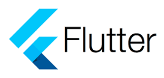

Work Experience


I'm a multi-talented individual with a passion for technology and a diverse skill set. With experience in Python, Django, ReactJS, Flutter, and the MERN stack, I have a strong foundation in web and mobile app development. Additionally, I possess expertise in data analysis, allowing me to derive valuable insights from complex datasets. As a trader, I am well-versed in financial markets and possess a keen eye for market trends. In my downtime, I enjoy playing online games, immersing myself in virtual worlds and honing my strategic thinking skills. Furthermore, I actively contribute as a Discord moderator, ensuring a positive and inclusive community environment. With my versatile background and dedication to continuous learning, I'm excited to take on new challenges and make meaningful contributions to the tech industry.
Doctor-Patient web app is a user-friendly healthcare applications. This web app incorporates essential features such as appointment scheduling, booking management, prescription handling, and a secure payment gateway. With a focus on usability and functionality, this project demonstrates my ability to create efficient solutions for the healthcare industry.

Using the MERN stack, We built a website with machine learning models for predictive search results. I focused on seamless API integration and frontend design to enhance user experience. Thorough testing guarantees reliability and functionality of the web application. Combining machine learning algorithms API's with the MERN stack, while optimizing performance and responsiveness.

This ML project aims to develop a predictive model that can accurately identify diseases based on symptoms. By training the model on a large dataset of symptoms and corresponding diagnoses, it learns patterns and relationships that enable it to make accurate predictions. This can greatly assist in early detection and diagnosis, potentially improving patient outcomes and saving lives. The project combines the power of machine learning algorithms with medical expertise to enhance disease identification and provide valuable insights for healthcare professionals.
Our project is a mobile app designed in flutter framework which monitors and assess the accuracy of workouts performed by individuals. With the help of advanced motion tracking technology, the app can detect and analyze the precise movements involved in various exercises. This feature proves particularly useful for physicians who can assign specific workout routines to their patients and remotely monitor their performance. By ensuring correct form and technique, the app aims to optimize the effectiveness of workouts while minimizing the risk of injuries for users.